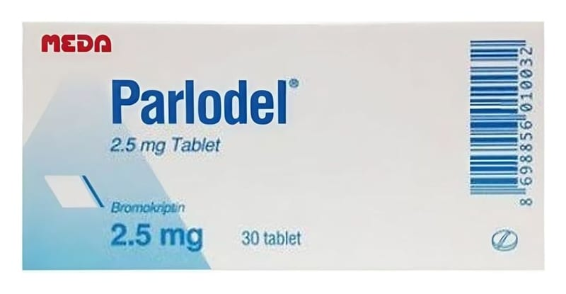

Parlodel 2.5 mg Tablet, 30 Adet

Ne için kullanılır
KT · Bölüm 1PARLODEL, beyaz, yuvarlak, ortadan çentikli tabletlerdir. Tablette bulunan çentik, tabletin eşit dozlara bölünmesini sağlar. PARLODEL, 30 tablet içeren blister ambalajlarda sunulmaktadır. PARLODEL, etkin madde olarak bromokriptin içerir. PARLODEL içeriğindeki laktoz, hayvansal kaynaklı sığır sütünden elde edilmiştir. Bromokriptin, beyinde sinirler arasında aracılık yapan bir madde olan dopaminin dokularda bağlandığı alıcılarından birine bağlanarak dopamine benzer aktivite gösteren bir ilaçtır. Aynı zamanda beyin tabanında küçük bir bez olan hipofizin ön lobundan memelerden süt salınmas ını sağlayan bir hormon olan prolaktinin salgılanmasını engeller.
PARLODEL aşağıdaki durumların tedavisinde kullanılır: Parkinson hastalığı (Beyinde dopamin azlığı sonucu ortaya çıkabilen ve temel belirtileri uzuvlarda titreme, kaslarda sertlik ve hareketlerin yavaşlaması olan bir sinir sistemi hastalığı. Dopamin beyinde hareketlerin koordinasyonunda önemli rol oynayan bir maddedir.) Prolaktinoma (Beyinde hipofiz bezinde prolaktin hormonu (süt hormonu) salgılayan iyi huylu tümör.) Akromegali (Kanda büyüme hormonunun fazla olduğu bir durumdur. Çocukluk çağında iskelet kemiklerinde fazla büyüme artışına bağlı devliğe (jigantizm) ve erişkin dönemde alt çene kemiğinde büyüme, el ve ayakların boyutlarında artma ve yüz özelliklerinde genel bir kabalık ve iriliğe yol açar. PARLODEL kandaki büyüme hormonunun miktarını azaltır.) Erkeklerde prolaktin hormonunun aşırı salgılanması (sperm sayısında azalma, cinsel istek azalması ve iktidarsızlık (impotans) ile seyreder.) Adet (menstrüel siklus) bozuklukları, kadınlarda kısırlık (Hiç adet görememe (amenore), çok az adet görme (oligomenore) ve bunlara eşlik edebilen göğüslerden süt gelmesi (galaktore) durumları.) ‐ Kanda prolaktin hormonu fazla veya normal olabilir. ‐ Bazı ilaçlara bağlı olarak da gelişebilir. Kadınlarda prolaktine bağlı olmayan kısırlık ‐ Yumurtalıklarda oluşan birden fazla kistlere bağlı gelişen bir durum (polikistik over sendromu) ‐ Yumurtlamanın olmadığı (anovülasyon) adet dönemleri (bu durumda anti-östrojen sınıfı, kadınlık hormonuna zıt etki yapan ilaçlara ek olarak) Gebelik sonrası göğüslerden süt gelmesinin (laktasyon) tıbbi nedenlerle durdurulması gerektiği durumlar ‐ Doğum esnasında kayıp, doğum sonrası bebek ölümü ‐ Annede insan bağışıklık yetmezliği virüsü (HIV) ile enfeksiyon (HIV virüsünün süte geçişini önlemek için) Doğum sonrası göğüslerinizdeki şişkinlik ve ağrı semptomları, meme desteği veya buz uygulanması ya da gerektiğinde ağrı kesici kullanımı gibi yöntemlerle tedavi edilebiliyorsa PARLODEL kullanımı önerilmez.